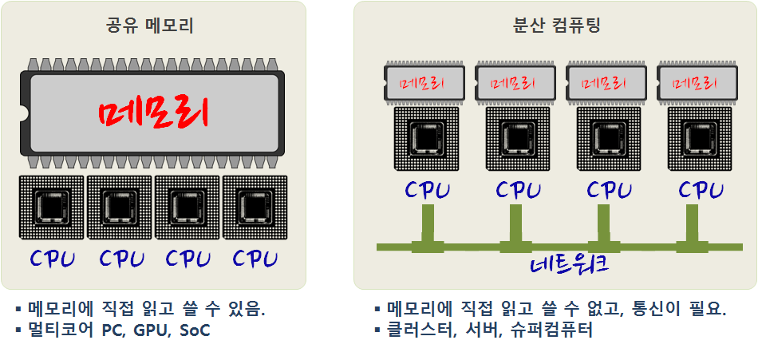
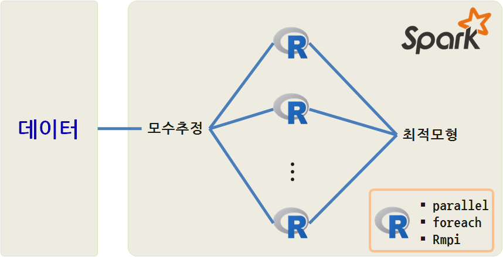
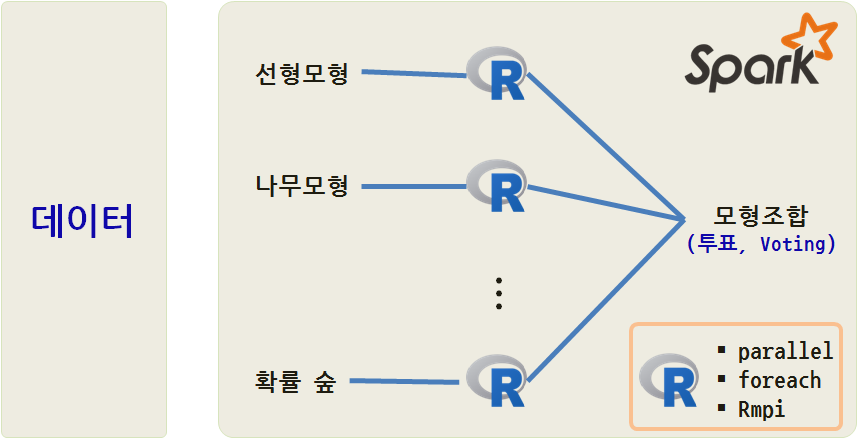

데이터 과학
R 스케일-아웃 성능향상
학습 목표
- R 스케일-아웃 전략을 통한 성능향상에 대해 살펴본다.
1. 병렬 프로그래밍을 위한 하드웨어 환경

2. 병렬 프로그래밍을 R 팩키지 툴체인
CRAN Task View - High-Performance and Parallel Computing with R 사이트에 가면 R에서 바라본 다양한 고성능 슈퍼컴퓨팅 관련 작업이 일목요연하게 정리되어 있다.
2.1. 공유 메모리 모형을 활용한 R 병렬 컴퓨팅
parallel은 독립적으로 서로 다른 사람들이 개발한 snow 와 multicore를 합친 것이다. multicore는 포크(fork) 를 사용하는 반면에 snow는 소켓(socket)을 사용한다. 윈도우에서는 지원이 제한되는 경우가 있기 때문에, 가능하면 리눅스 계열을 운영체제를 사용한다.
2.1.1. parallel 계열
#-------------------------------------------------------------------------
# 1.1. multicore
#-------------------------------------------------------------------------
x <- lapply (1:10 , sqrt )
library(parallel)
x.mc <- mclapply(1:10, sqrt)
all.equal (x.mc ,x)
simplify2array(mclapply(1:10 , function(i) Sys.getpid(), mc.cores=1))
#-------------------------------------------------------------------------
# 1.2. snow
#-------------------------------------------------------------------------
# ## Set up the worker processes
cl <- makeCluster(detectCores())
cl
# socket cluster with 4 nodes on host
parSapply(cl, 1:5, sqrt)
stopCluster(cl)| 팩키지 | 함수 |
|---|---|
| 공통 | detectCores(), splitIndices() |
multicore |
mclapply(), mcmapply(), mcparallel(), mccollect() |
snow |
makeCluster(), stopCluster(), parLapply(), parSapply() |
2.1.2. foreach 계열
지금은 마이크로소프트에 인수된 Revolution Analytics에서 개발된 foreach 팩키지로 일종의 통합 인터페이스로 백엔드에 doMC, doMPI, doParallel, doRedis, doRNG, doSNOW를 두고 통합된 인터페이스를 제공하려고 한다.
library(foreach)
### Example 1
foreach(i=1:3) %do% sqrt(i)
### Example 2
n <- 50
reps <- 100
x <- foreach(i=1:reps) %do% {
sum(rnorm(n, mean=i)) / (n*reps)
}2.2. 공유메모리 분산컴퓨팅 사례 – 제곱근
윈도우에서 mclapply()는 코어를 하나만 제공하기 때문에 리눅스나 맥에서 수행하다. mclapply, parSapply, foreach를 사용해서 1에서 100,00까지 제곱근을 계산을 수행하고 기준정보 벤치마킹 작업을 수행한다.
library(parallel)
library(doParallel)
library(rbenchmark)
## 환경설정
n <- 100000
ncores <- 7
cl <- makeCluster(ncores)
registerDoParallel(cl)
## 병렬처리 작업
f <- function(n) simplify2array(mclapply(1:n, sqrt, mc.cores=ncores))
g <- function(n) parSapply(cl, 1:n, sqrt)
h <- function(n, ncores)
{
foreach(i=1:ncores, .combine=c) %dopar%
{
roots <- numeric(n/ncores)
for (j in 1:(n/ncores))
roots[j] <- sqrt(i*j)
roots
}
}
## 벤치마킹 정보 비교
benchmark(mclapply=f(n), parSapply=g(n), foreach=h(n, ncores),
columns=c("test", "replications", "elapsed", "relative"))
stopCluster(cl)작업수행결과 foreach가 가장 좋은 성능을 보이고 있다. 맥에서 7코어를 사용해서 작업을 수행한 것이다.
test replications elapsed relative
3 foreach 100 2.013 1.000
1 mclapply 100 8.394 4.170
2 parSapply 100 6.660 3.3082.3. 공유메모리 분산컴퓨팅 사례 – 몬티홀 퀴즈쇼
몬티 홀 문제는 미국의 TV 게임쇼(Let’s make a deal)에서 유래한 퍼즐이다. 세 개의 문 중에 하나를 선택하여 문 뒤에 있는 선물을 가질 수 있는 게임쇼에 참가했다. 한 문 뒤에는 자동차가 있고, 나머지 두 문 뒤에는 염소가 있다. 이때 어떤 사람이 예를 들어 1번 문을 선택했을 때, 게임쇼 진행자는 3번 문을 열어 문뒤에 염소가 있음을 보여주면서 1번 대신 2번을 선택하겠냐고 물었다. 참가자가 자동차를 가지려할 때 원래 선택했던 번호를 바꾸는 것이 유리할까? 이때 진행자는 자동차와 염소가 어떤 문에 있는지 알고 있기 때문에, 진행자가 자동차가 있는 문을 여는 일은 절대 발생하지 않는다.
lets_make_a_deal <- function()
{
prize_door <- sample(1:3, size=1)
first_selection <- sample(1:3, size=1)
### 항상 최초 선택을 바꾼다고 설정한다.
if (prize_door == first_selection)
return("lose")
else
return("win")
}
wincount <- function(winlosevec) sum(winlosevec=="win")
library(parallel)
n <- 1000000
system.time({
winlose <- simplify2array(mclapply(1:n, lets_make_a_deal, mc.cores=7))
print(wincount(winlose) / n)
})백만번 모의시험을 수행했을 때, 이론적인 확률값 \(\frac{2}{3}\)에 수렴한다.
# [1] 0.666874
# 사용자 시스템 elapsed
# 11.510 1.579 3.066 3. 메시지 전달을 통한 분산 R 병렬 컴퓨팅
분산 R 병렬 컴퓨팅을 수행해야 되는 이유는 각 범용 컴퓨터 메모리가 한정되어 있기 때문이다. 만약 데이터가 메모리보다 더 커다란 경우 메시지 전달을 통한 분산 처리를 통한 방법이 남는다.
Rmpi가 대표적인 메시지 전달을 통한 분산병렬연산 작업을 수행한다. 분산된 컴퓨터는 직접 다른 컴퓨터의 메모리에 접근하여 작업을 할 수 없기 때문에 네트워크를 통해 메시지를 전달해서 공동작업을 수행한다.
library(snow)
library(Rmpi)
cl <- makeCluster(2, type="MPI")
clusterCall(cl, function() Sys.getpid())
clusterCall(cl, runif, 2)
stopCluster(cl)
mpi.quit()4. R 병렬처리 두가지 접근방법
caret, tm 팩키지가 병렬컴퓨팅을 수행하는 대표적인 R 팩키지다. 서로 독립적으로 문제를 나누어서 병렬처리가 가능한 사례를 두가지 R 기계학습에서 들 수 있다. 동일한 모형내에서 최적모형을 개발할 태, 모수를 추정해야 한다. 각 변수에 대한 모수 뿐만 아니라, 능선회귀 등을 통해 정규화를 할 경우 정규화 모수 \(\lambda\) 도 추정을 해서 최적모형을 찾아낸다.
스파크의 힘을 빌어 SparkR로 분산처리 모형을 개발하는 방법이 하나이고, 또다른 방식을 다양한 R 병렬컴퓨팅 팩키지를 활용하여 최적모형을 찾아내는 것도 가능하다.

두번째 병렬처리 적용이 가능한 분야는 서로 다른 모형을 추정하여 결과값을 투표로 정해 조합하는 경우로 선형모형부터, 신경망, 나무모형, 확률숲 등 다양한 모형을 데이터 적합시키고 결과를 투표로 조합해서 산출해내는 방법이 있다. 위와 마찬가지로, 스파크의 힘을 빌어 SparkR로 분산처리 모형을 개발하는 방법이 하나이고, 또다른 방식을 다양한 R 병렬컴퓨팅 팩키지를 활용하여 최적모형을 찾아내는 것도 가능하다.
